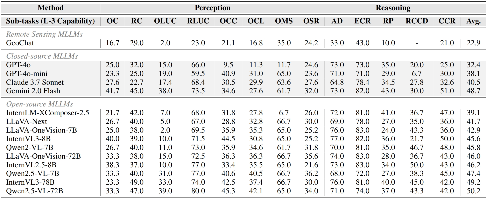

Models are ranked according to their average performance on perception and reasoning tasks, from highest to lowest. "Counting", "Scene Classification", and so on each indicate a specific L2 sub-task respectively. “Avg” indicate the weighted average accuracy across all L2 sub-tasks or macro average across all L3 tasks. We will add both metrics soon. By default, this leaderboard is sorted by results with Avg.. To view other sorted results, please click on the corresponding cell.
Results on XLRS-Bench-lite.
